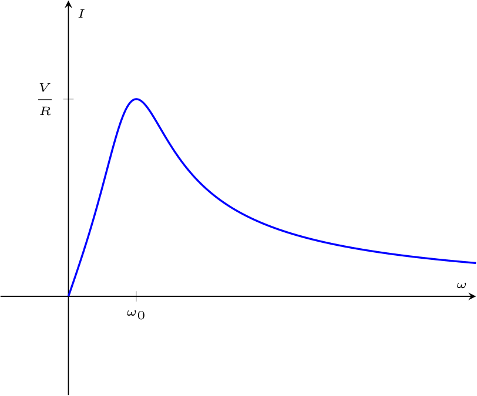
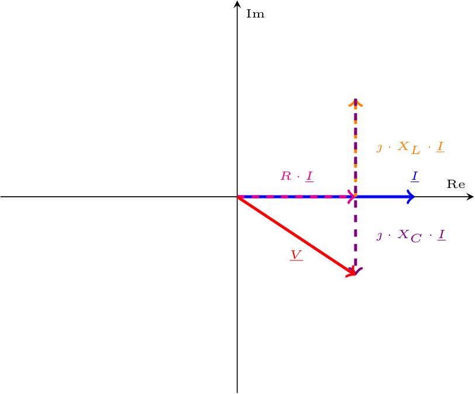
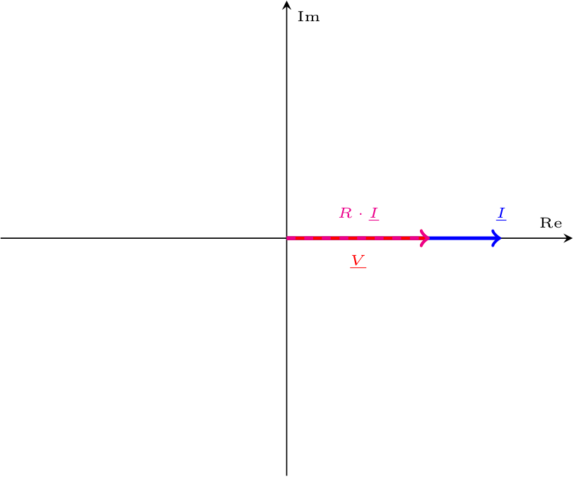

Definizione - Comportamento di circuito RLC in serie al variare della pulsazione (Risonanza)
Considerando il seguente circuito in regime sinusoidale  in cui la tensione è uguale a \[ v(t) = \hat{V} \cdot \cos(\omega \cdot t + \alpha_V) \] si ha che è possibile applicare la trasformata di Steinmetz ottenendo il seguente circuito
in cui la tensione è uguale a \[ v(t) = \hat{V} \cdot \cos(\omega \cdot t + \alpha_V) \] si ha che è possibile applicare la trasformata di Steinmetz ottenendo il seguente circuito  permettendo di calcolare l'impedenza equivalente del circuito uguale a \[ \begin{array}{ccl} \underline{Z}_{eq} & = & \underline{Z}_R + \underline{Z}_L + \underline{Z}_C \\ & = & R + \jmath \cdot \omega \cdot L - \jmath \cdot \frac{1}{\omega \cdot C} \\ & = & R + \jmath \cdot \left( \omega \cdot L - \frac{1}{\omega \cdot C} \right) \\ & = & R + \jmath \cdot X \end{array} \] È utile considerare per quale valore di \( \omega\) (detto \( \omega_0\)), la reattanza \( X\) si annulla \[ \begin{array}{ccl} X = 0 & \to & \omega \cdot L - \frac{1}{\omega \cdot C} = 0 \\ & \overset{\cdot \frac{\omega \cdot C}{\omega \cdot C}}{\to} & \omega^2 \cdot L \cdot C - 1 = 0 \\ & \to & \omega_0 = \frac{1}{\sqrt{L \cdot C}} \end{array} \] Tale pulsazione, detta di risonanza, rende nulla la reattanza \( X\) comportando un'impedenza puramente resistiva.
permettendo di calcolare l'impedenza equivalente del circuito uguale a \[ \begin{array}{ccl} \underline{Z}_{eq} & = & \underline{Z}_R + \underline{Z}_L + \underline{Z}_C \\ & = & R + \jmath \cdot \omega \cdot L - \jmath \cdot \frac{1}{\omega \cdot C} \\ & = & R + \jmath \cdot \left( \omega \cdot L - \frac{1}{\omega \cdot C} \right) \\ & = & R + \jmath \cdot X \end{array} \] È utile considerare per quale valore di \( \omega\) (detto \( \omega_0\)), la reattanza \( X\) si annulla \[ \begin{array}{ccl} X = 0 & \to & \omega \cdot L - \frac{1}{\omega \cdot C} = 0 \\ & \overset{\cdot \frac{\omega \cdot C}{\omega \cdot C}}{\to} & \omega^2 \cdot L \cdot C - 1 = 0 \\ & \to & \omega_0 = \frac{1}{\sqrt{L \cdot C}} \end{array} \] Tale pulsazione, detta di risonanza, rende nulla la reattanza \( X\) comportando un'impedenza puramente resistiva.
Al fine di calcolare la fase della corrente, considerando \( \varphi\) la fase dell'impedenza e che \( \alpha_V\) sia nulla, si ha che \[ \begin{array}{ccl} \varphi = \alpha_V - \alpha_I & \to & \alpha_I = \overbrace{\alpha_V}^0 - \varphi \\ & \to & \alpha_I = -\varphi \\ & \to & \alpha_I = -\arctan\left( \frac{\left( \omega \cdot L - \frac{1}{\omega \cdot C} \right)}{R} \right) \end{array} \] e graficando tali parametri si ha che il modulo della corrente al variare della pulsazione è uguale a mentre la fase 
Corrente del circuito
Al fine di comprendere il comportamento della corrente del circuito, consideriamo che \[ \left\{ \begin{array}{ccl} \underline{V} & = & V \cdot \mathrm{e}^{\jmath \cdot \alpha_V} \\ \underline{I} & = & I \cdot \mathrm{e}^{\jmath \cdot \alpha_I} \end{array} \right. \] e che \[ \underline{I} = \frac{\underline{V}}{\underline{Z}_{eq}} \] È quindi possibile calcolare il modulo \( I\) come \[ \begin{array}{ccl} I & = & \frac{\left| \underline{V} \right|}{\left| \underline{Z}_{eq} \right|} \\ & = & \frac{V}{\sqrt{R^2 + \left( \omega \cdot L - \frac{1}{\omega \cdot C} \right)^2}} \\ \end{array} \] (ndr, è possibile notare che alla pulsazione di risonanza si ha che il modulo della corrente è uguale a \( \; {}^{V} /_{R\;}\) ed è il valore massimo raggiungibile).Al fine di calcolare la fase della corrente, considerando \( \varphi\) la fase dell'impedenza e che \( \alpha_V\) sia nulla, si ha che \[ \begin{array}{ccl} \varphi = \alpha_V - \alpha_I & \to & \alpha_I = \overbrace{\alpha_V}^0 - \varphi \\ & \to & \alpha_I = -\varphi \\ & \to & \alpha_I = -\arctan\left( \frac{\left( \omega \cdot L - \frac{1}{\omega \cdot C} \right)}{R} \right) \end{array} \] e graficando tali parametri si ha che il modulo della corrente al variare della pulsazione è uguale a

Rappresentazione fasoriale
Considerando la legge di Ohm simbolica, si ha che \[ \begin{array}{ccl} \underline{V} & = & \underline{Z} \cdot \underline{I} \\ & = & (R + \jmath \cdot (X_L + X_C)) + \underline{I} \\ & = & R \cdot \underline{I} + \jmath \cdot X_L \cdot \underline{I} + \jmath \cdot X_C \cdot \underline{I} \\ & = & R \cdot \underline{I} + \jmath \cdot (\omega \cdot L) \cdot \underline{I} + \jmath \cdot \left( - \frac{1}{\omega \cdot C} \right) \cdot \underline{I} \end{array} \] Come è possibile notare nel grafico della fase, si ha che in base al valore della pulsazione, si ha che:- se \( \omega \lt \omega_0\) (e quindi \( X_C \gt X_L\)) si ha la seguente rappresentazione fasoriale (ottenuta effettuando la somma tra i vettori) si ha infatti che a prevalere è la reattanza capacitiva (\( X_C = - \frac{1}{\omega \cdot C}\)) rendendo l'argomento negativo;
- se \( \omega = \omega_0\) (e quindi \( X_L = X_C\)) si ha la seguente rappresentazione fasoriale si ha infatti che la reattanza è nulla ed è quindi presente un'impedenza puramente resistiva;
- se \( \omega \gt \omega_0\) (e quindi \( X_L \gt X_C\)) si ha la seguente rappresentazione fasoriale (ottenuta effettuando la somma tra i vettori) si ha infatti che a prevalere è la reattanza induttiva (\( X_L = \omega \cdot C\)) rendendo l'argomento positivo.

Definizione - Comportamento di circuito RLC in parallelo al variare della pulsazione (Antirisonanza)
Considerando il seguente circuito in regime sinusoidale  in cui la tensione è uguale a \[ v(t) = \hat{V} \cdot \cos(\omega \cdot t + \alpha_V) \] si ha che è possibile applicare la trasformata di Steinmetz ottenendo il seguente circuito
in cui la tensione è uguale a \[ v(t) = \hat{V} \cdot \cos(\omega \cdot t + \alpha_V) \] si ha che è possibile applicare la trasformata di Steinmetz ottenendo il seguente circuito  permettendo di calcolare l'impedenza equivalente del circuito uguale a \[ \begin{array}{ccl} \underline{Z}_{eq} & = & \underline{Z}_R + \left( \underline{Z}_L \ // \ \underline{Z}_C \right) \\ & = & \underline{Z}_R + \frac{\underline{Z}_L \cdot \underline{Z}_C}{\underline{Z}_L + \underline{Z}_C} \\ & = & R + \frac{ \jmath \cdot \omega \cdot L \cdot \frac{1}{\jmath \cdot \omega \cdot C}}{\left( \jmath \cdot \omega \cdot L \right) + \left( \frac{1}{\jmath \cdot \omega \cdot C} \right)} \\ & = & R + \frac{\frac{L}{C}}{\frac{- \omega^2 \cdot L \cdot C + 1}{\jmath \cdot \omega \cdot C}} \\ & \overset{\cdot \frac{\jmath \cdot \omega \cdot C}{\jmath \cdot \omega \cdot C}}{=} & R + \frac{\frac{L}{C}}{\frac{- \omega^2 \cdot L \cdot C + 1}{\jmath \cdot \omega \cdot C} \cdot \frac{\jmath \cdot \omega \cdot C}{\jmath \cdot \omega \cdot C}} \\ & = & R + \frac{\frac{L}{C}}{(- \omega^2 \cdot L \cdot C + 1) \cdot \frac{1}{\jmath \cdot \omega \cdot C}} \\ & = & R + \frac{\frac{L}{C}}{(- \omega^2 \cdot L \cdot C + 1)} \cdot \jmath \cdot \omega \cdot C \\ & = & R + \jmath \cdot \frac{ \omega \cdot L}{1 - \omega^2 \cdot L \cdot C} \\ \end{array} \] È utile considerare per quale valore \( \omega\) (detto \( \omega_0\)), la reattanza \( X\) tenda a \( +\infty\), ovvero il denominatore tenda a 0 \[ \begin{array}{ccl} X \to +\infty & \to & 1 - \omega^2 \cdot L \cdot C = 0 \\ & \to & \omega^2 \cdot L \cdot C = 1 \\ & \to & \omega^2 = \frac{1}{L \cdot C} \\ & \to & \omega = \frac{1}{\sqrt{L \cdot C}} \end{array} \] Tale pulsazione è detta di antirisonanza.
permettendo di calcolare l'impedenza equivalente del circuito uguale a \[ \begin{array}{ccl} \underline{Z}_{eq} & = & \underline{Z}_R + \left( \underline{Z}_L \ // \ \underline{Z}_C \right) \\ & = & \underline{Z}_R + \frac{\underline{Z}_L \cdot \underline{Z}_C}{\underline{Z}_L + \underline{Z}_C} \\ & = & R + \frac{ \jmath \cdot \omega \cdot L \cdot \frac{1}{\jmath \cdot \omega \cdot C}}{\left( \jmath \cdot \omega \cdot L \right) + \left( \frac{1}{\jmath \cdot \omega \cdot C} \right)} \\ & = & R + \frac{\frac{L}{C}}{\frac{- \omega^2 \cdot L \cdot C + 1}{\jmath \cdot \omega \cdot C}} \\ & \overset{\cdot \frac{\jmath \cdot \omega \cdot C}{\jmath \cdot \omega \cdot C}}{=} & R + \frac{\frac{L}{C}}{\frac{- \omega^2 \cdot L \cdot C + 1}{\jmath \cdot \omega \cdot C} \cdot \frac{\jmath \cdot \omega \cdot C}{\jmath \cdot \omega \cdot C}} \\ & = & R + \frac{\frac{L}{C}}{(- \omega^2 \cdot L \cdot C + 1) \cdot \frac{1}{\jmath \cdot \omega \cdot C}} \\ & = & R + \frac{\frac{L}{C}}{(- \omega^2 \cdot L \cdot C + 1)} \cdot \jmath \cdot \omega \cdot C \\ & = & R + \jmath \cdot \frac{ \omega \cdot L}{1 - \omega^2 \cdot L \cdot C} \\ \end{array} \] È utile considerare per quale valore \( \omega\) (detto \( \omega_0\)), la reattanza \( X\) tenda a \( +\infty\), ovvero il denominatore tenda a 0 \[ \begin{array}{ccl} X \to +\infty & \to & 1 - \omega^2 \cdot L \cdot C = 0 \\ & \to & \omega^2 \cdot L \cdot C = 1 \\ & \to & \omega^2 = \frac{1}{L \cdot C} \\ & \to & \omega = \frac{1}{\sqrt{L \cdot C}} \end{array} \] Tale pulsazione è detta di antirisonanza.  Come è evidente dal grafico, si ha che se \( \omega = \omega_0\) allora la corrente è nulla (\( I = 0\)). In particolare:
Come è evidente dal grafico, si ha che se \( \omega = \omega_0\) allora la corrente è nulla (\( I = 0\)). In particolare: 
Corrente del circuito
Al fine di comprendere il comportamento della corrente del circuito, consideriamo che \[ \left\{ \begin{array}{ccl} \underline{V} & = & V \cdot \mathrm{e}^{\jmath \cdot \alpha_V} \\ \underline{I} & = & I \cdot \mathrm{e}^{\jmath \cdot \alpha_I} \end{array} \right. \] e che \[ \underline{I} = \frac{\underline{V}}{\underline{Z}_{eq}} \] ed è quindi possibile calcolare il modulo \( I\) come \[ \begin{array}{ccl} I & = & \frac{\left| \underline{V} \right|}{\left| \underline{Z}_{eq} \right|} \\ & = & \frac{V}{\sqrt{R^2 + \left( \frac{ \omega \cdot L}{1 - \omega^2 \cdot L \cdot C} \right)^2}} \\ \end{array} \] Al fine di calcolare la fase della corrente, considerando \( \varphi\) la fase dell'impedenza e che \( \alpha_V\) sia nulla, si ha che \[ \begin{array}{ccl} \varphi = \alpha_V - \alpha_I & \to & \alpha_I = \overbrace{\alpha_V}^0 - \varphi \\ & \to & \alpha_I = -\varphi \\ & \to & \alpha_I = -\arctan\left( \frac{\left( \frac{ \omega \cdot L}{1 - \omega^2 \cdot L \cdot C} \right)}{R} \right) \end{array} \] e graficando tali parametri si ha che il modulo della corrente al variare della pulsazione è uguale a- se \( \omega = 0\), si ha che l'induttore si comporta come un cortocircuito mentre il condensatore come un circuito aperto;
- se \( \omega \to +\infty\), si ha che l'induttore si comporta come un circuito aperto, mentre il condensatore come un cortocircuito.
Dimostrazione - Valori delle correnti \( \underline{I}_C\) e \( \underline{I}_L\) in circuito RLC in parallelo alla pulsazione di antirisonanza
Data la proposizione
Enunciato:
Considerando un circuito RLC in parallelo di pulsazione \( \omega_0 = \frac{1}{\sqrt{L \cdot C}}\), ovvero in cui la corrente \( \underline{I}\) è nulla si ha tuttavia che le correnti \( \underline{I}_L\) e \( \underline{I}_C\) non sono necessariamente nulle ma sono opposte, ovvero \[ \underline{I}_C = -\underline{I}_L \]
Dimostrazione:
Per dimostrare questa proposizione, consideriamo di applicare LKT al circuito  ottenendo \[ \begin{array}{lccl} LKT: \quad & \underline{V} & = & \overbrace{\underline{V}_R}^{R \cdot \underline{I}} + \underline{V}_X \\ & \underline{V} & = & R \cdot \overbrace{\underline{I}}^0 + \underline{V}_X \\ & \underline{V} & = & \underline{V}_X \end{array} \] Calcolando ora \( \underline{I}_C\) (ricordando che stiamo considerando il circuito con pulsazione \( \omega_0\) e quindi \( I = 0\) ) \[ \begin{array}{ccl} \underline{I}_C & = & \frac{\underline{V}_X}{\underline{Z}_C} \\ & \overset{\underline{V} = \underline{V}_X}{=} & \frac{\underline{V}}{\underline{Z}_C} \\ & = & \frac{\underline{V}}{\frac{1}{\jmath \cdot \omega \cdot C}} \\ & \overset{\omega = \omega_0}{=} & \jmath \cdot \underline{V} \cdot \omega_0 \cdot C \\ & \overset{\omega_0 = \frac{1}{\sqrt{L \cdot C}}}{=} & \jmath \cdot \underline{V} \cdot \frac{1}{\sqrt{L \cdot C}} \cdot C \\ & = & \jmath \cdot \underline{V} \cdot \sqrt{\frac{C}{L}} \end{array} \] e \( \underline{I}_L\) \[ \begin{array}{ccl} \underline{I}_L & = & \frac{\underline{V}_X}{\underline{Z}_L} \\ & \overset{\underline{V} = \underline{V}_X}{=} & \frac{\underline{V}}{\underline{Z}_L} \\ & = & \frac{\underline{V}}{\jmath \cdot \omega \cdot L} \\ & \overset{\omega = \omega_0}{=} & \frac{\underline{V}}{\jmath \cdot \omega_0 \cdot L} \\ & \overset{\cdot \frac{\jmath}{\jmath}}{=} & -\jmath \cdot \frac{1}{\omega_0 \cdot L} \cdot \underline{V} \\ & \overset{\omega_0 = \frac{1}{\sqrt{L \cdot C}}}{=} & -\jmath \cdot \frac{1}{\frac{1}{\sqrt{C \cdot L}} \cdot L} \cdot \underline{V} \\ & = & -\jmath \cdot \frac{1}{\sqrt{\frac{L}{C}}} \cdot \underline{V} \\ & = & -\jmath \cdot \sqrt{\frac{C}{L}} \cdot \underline{V} \end{array} \] e quindi \[ \underline{I}_C = - \underline{I}_L \] che dimostra la proposizione.
ottenendo \[ \begin{array}{lccl} LKT: \quad & \underline{V} & = & \overbrace{\underline{V}_R}^{R \cdot \underline{I}} + \underline{V}_X \\ & \underline{V} & = & R \cdot \overbrace{\underline{I}}^0 + \underline{V}_X \\ & \underline{V} & = & \underline{V}_X \end{array} \] Calcolando ora \( \underline{I}_C\) (ricordando che stiamo considerando il circuito con pulsazione \( \omega_0\) e quindi \( I = 0\) ) \[ \begin{array}{ccl} \underline{I}_C & = & \frac{\underline{V}_X}{\underline{Z}_C} \\ & \overset{\underline{V} = \underline{V}_X}{=} & \frac{\underline{V}}{\underline{Z}_C} \\ & = & \frac{\underline{V}}{\frac{1}{\jmath \cdot \omega \cdot C}} \\ & \overset{\omega = \omega_0}{=} & \jmath \cdot \underline{V} \cdot \omega_0 \cdot C \\ & \overset{\omega_0 = \frac{1}{\sqrt{L \cdot C}}}{=} & \jmath \cdot \underline{V} \cdot \frac{1}{\sqrt{L \cdot C}} \cdot C \\ & = & \jmath \cdot \underline{V} \cdot \sqrt{\frac{C}{L}} \end{array} \] e \( \underline{I}_L\) \[ \begin{array}{ccl} \underline{I}_L & = & \frac{\underline{V}_X}{\underline{Z}_L} \\ & \overset{\underline{V} = \underline{V}_X}{=} & \frac{\underline{V}}{\underline{Z}_L} \\ & = & \frac{\underline{V}}{\jmath \cdot \omega \cdot L} \\ & \overset{\omega = \omega_0}{=} & \frac{\underline{V}}{\jmath \cdot \omega_0 \cdot L} \\ & \overset{\cdot \frac{\jmath}{\jmath}}{=} & -\jmath \cdot \frac{1}{\omega_0 \cdot L} \cdot \underline{V} \\ & \overset{\omega_0 = \frac{1}{\sqrt{L \cdot C}}}{=} & -\jmath \cdot \frac{1}{\frac{1}{\sqrt{C \cdot L}} \cdot L} \cdot \underline{V} \\ & = & -\jmath \cdot \frac{1}{\sqrt{\frac{L}{C}}} \cdot \underline{V} \\ & = & -\jmath \cdot \sqrt{\frac{C}{L}} \cdot \underline{V} \end{array} \] e quindi \[ \underline{I}_C = - \underline{I}_L \] che dimostra la proposizione.
Nota bene - Perfettamente bilanciato
Considerando questa situazione, si ha in particolare che induttore e condensatore si scambiano energia, ovvero si "scaricano" e "caricano" a vicenda.